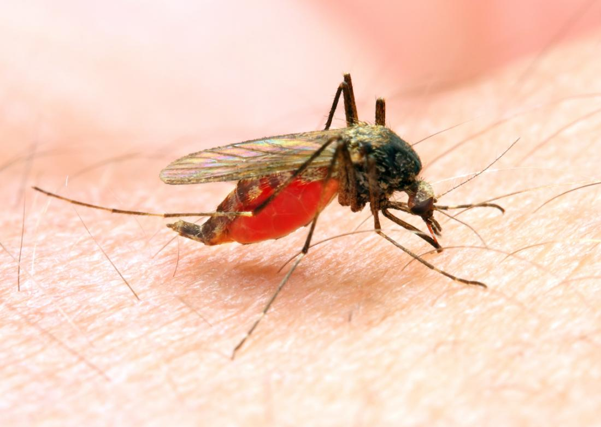

MALARIA

- Malaria is a disease caused by the bite of a mosquito called Anopheles.
- The disease causes fever and muscle cramps.
- Although there are no separate diets for this disease, it is possible to recover quickly from this attack by eating enough nutritious foods
- Eat or drink fruits that are high in water.
- In particular, the body can get the water it needs by drinking highly hydrated beverages such as lemongrass and lentils.
- Watermelon, also known as water fruit, can be eaten with high hydration fruits such as cucumber and orange.
- This is because dehydration is one of the major problems facing our body when it comes to malaria.
- In this condition, we can maintain water balance by eating fluids, fruits and vegetables.
- Vegetables and fruits that are high in Vitamin A and C should be taken in moderation during this period.
- When malaria strikes, the muscles become much weaker.
- During that time, the body's protein requirements will be greatly reduced.
- It is essential to follow a high protein diet to correct it.
- Foods high in protein such as milk, yogurt and cheese are high in protein.
- All products made with milk as the main ingredient contain a lot of protein. Foods like spinach, legumes, green peas, butter beans, mushrooms and whole grains are high in protein.
- People with malaria can gain immunity very quickly by eating this type of food and get rid of malaria.
- Foods high in fat should be avoided only when possible.
- Just as nutrients such as protein and vitamins are important, so too are fats essential for the human body.